Taking a Line For a Walk is a super cool experiment. The title of the experiment is an allusion to the famous quote by Paul Klee, "A line is a dot that went for a walk." It is a very simple interface, a white background, with black text and black and grey lines. The user moves their mouse around and it draws a line based on the style that is indicated on the left side with a description. When you scroll down the style changes and, therefore, the quality of the line changes. There are 15 styles total which are subtly indicated by tiny dots on the right side of the page, which only shows the number style you are on. If you click while drawing on any of the styles it changes to another variation of the same style. There is "walking mode" and "drawing mode."
| 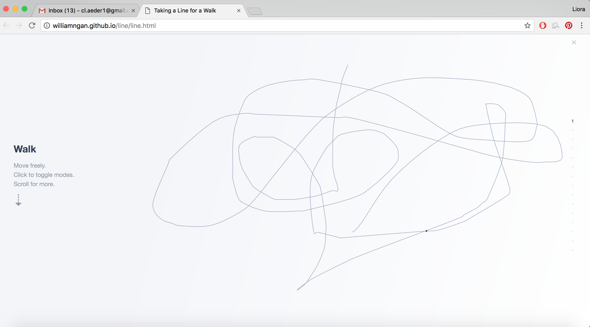 | 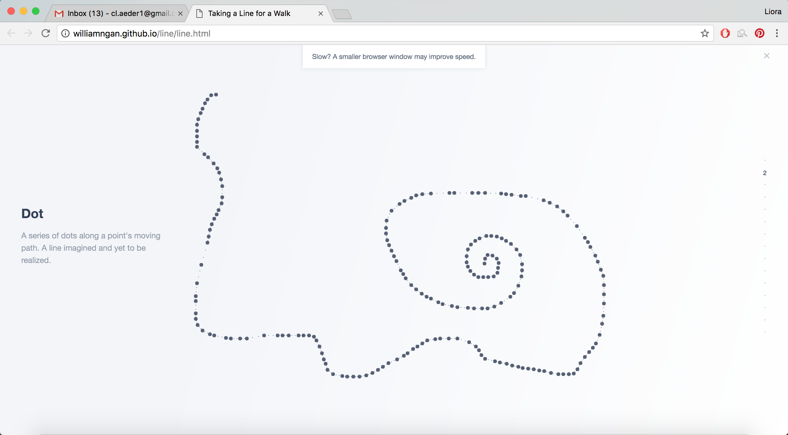 | 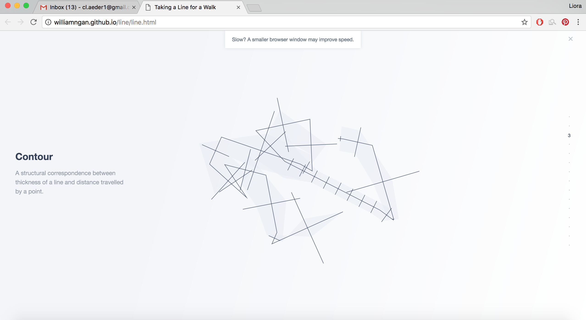 |
| 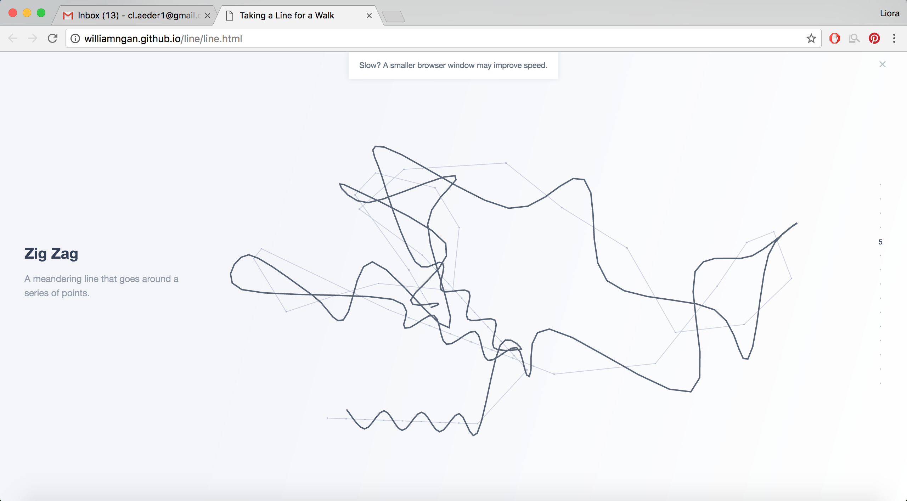 | 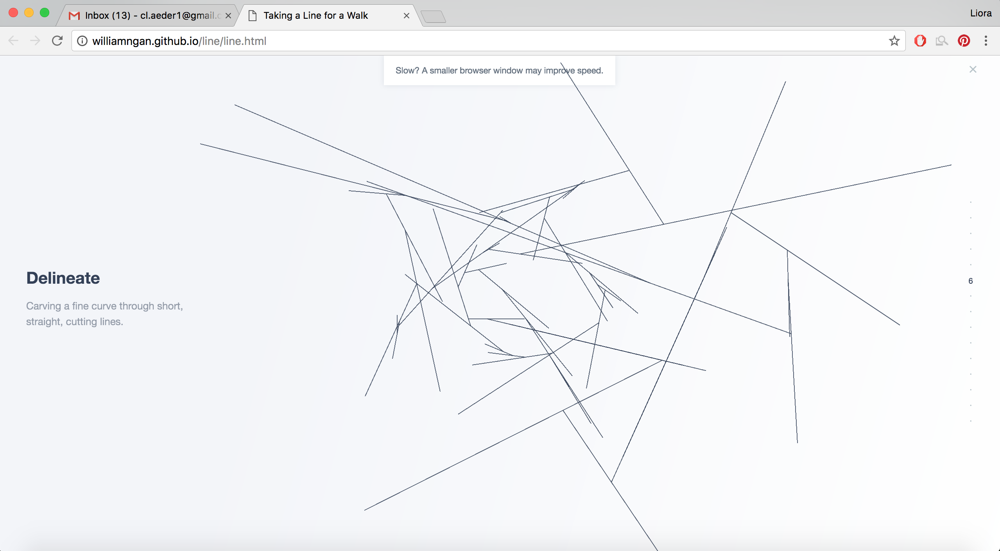 | 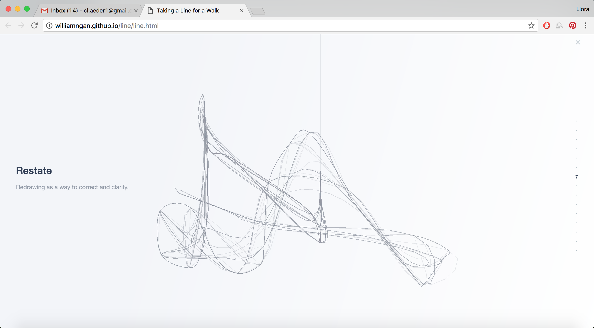 |
| 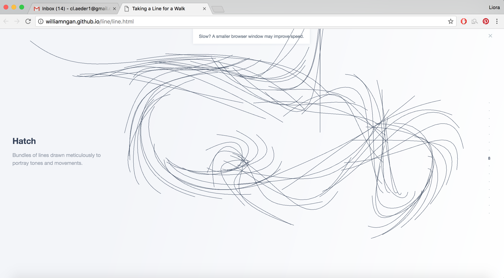 | 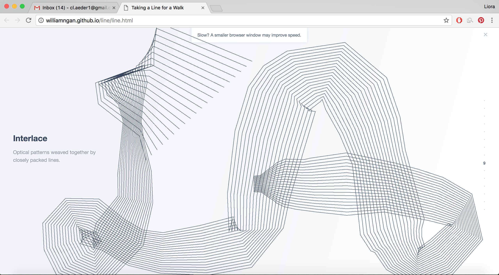 | 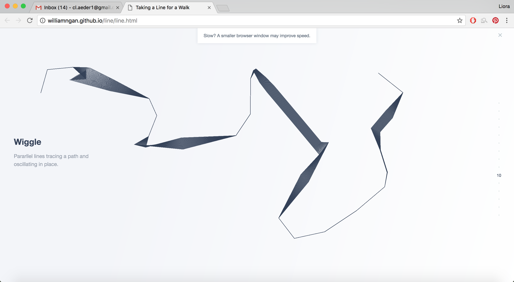 |
| 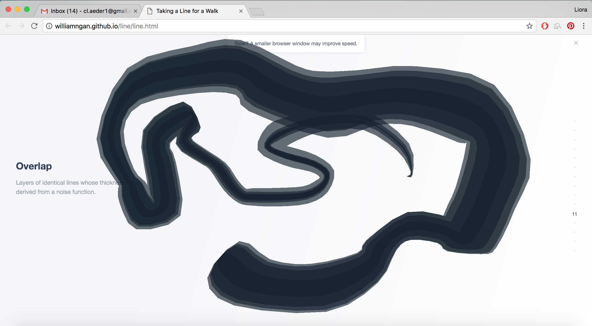 | 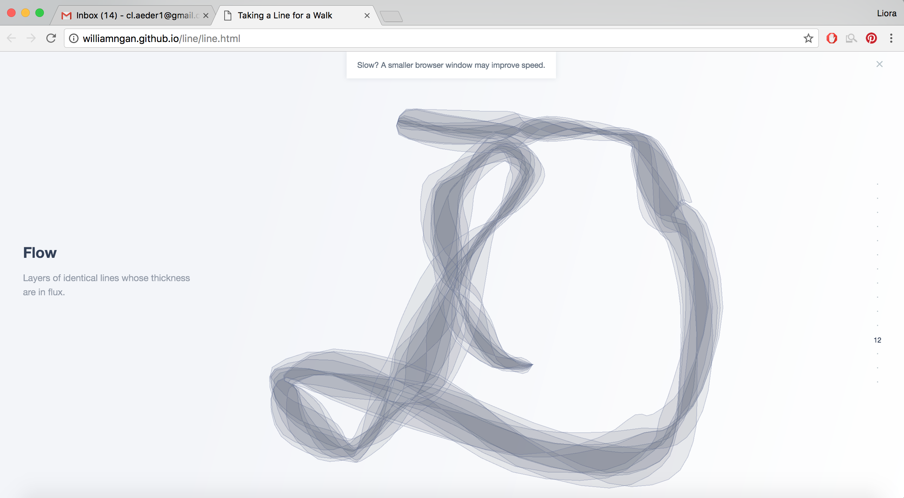 | 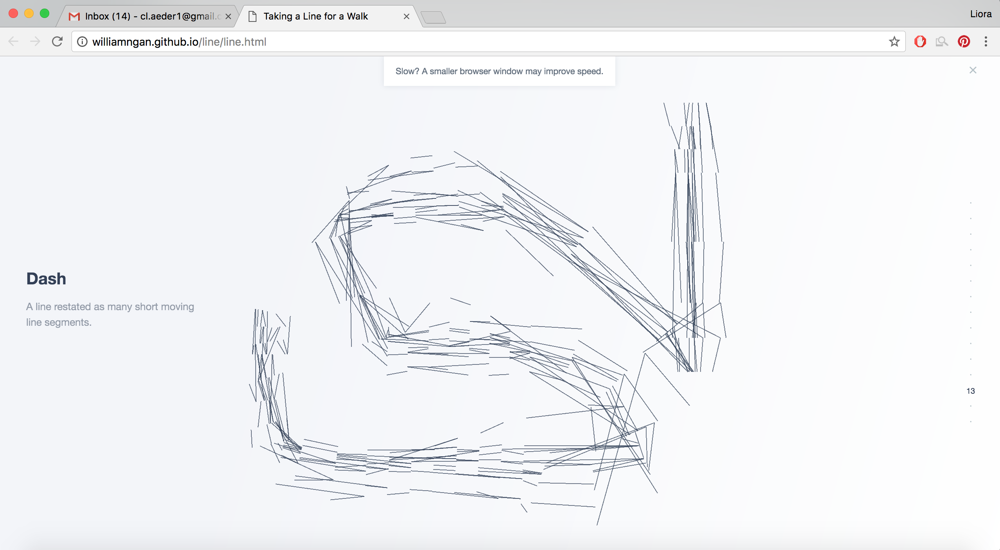 |
| 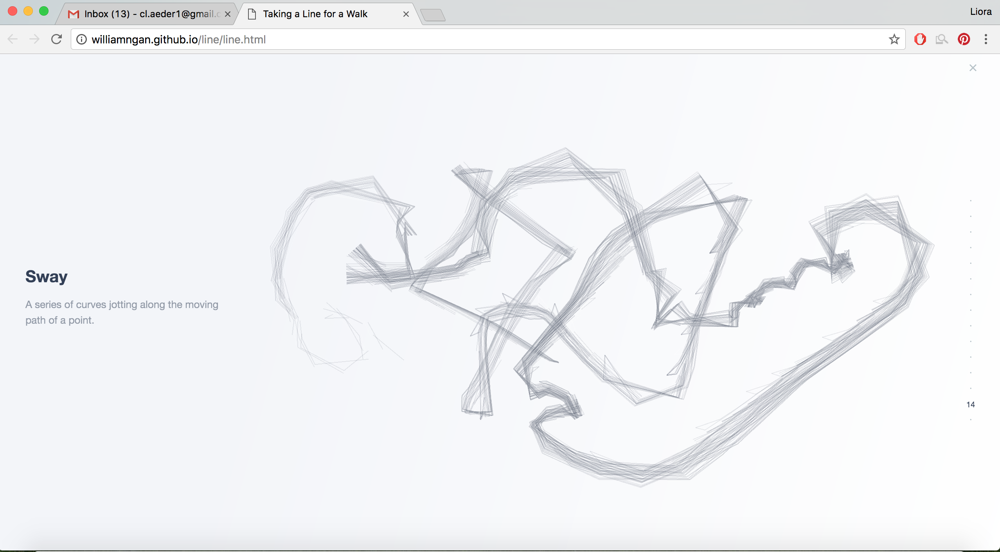 | 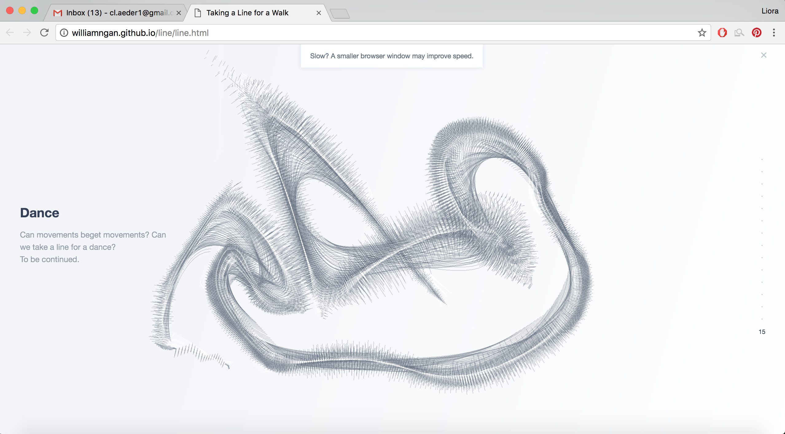 |
Which style sounds coolest to you?